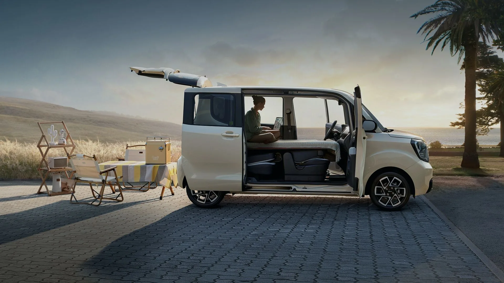

▲ 레이 EV는 가솔린·하이브리드 레이와 차체를 그대로 공유해, 겉모습만으로는 전기차인지 구분하기 어렵다 ⓒ Wikimedia Commons
같은 차체, 같은 배지인데 가격은 오히려 가솔린보다 저렴해질 수 있다.
기아 레이 EV 얘기다. 차체는 15년째 경차 판매 1위를 지키는 가솔린·하이브리드 레이와 똑같이 쓰지만, 동력계만 35.2kWh 리튬인산철(LFP) 배터리와 전기모터로 바꿔치기했다. 출고가만 보면 가솔린보다 훨씬 비싸 보이지만, 국고·지자체 보조금을 더한 실구매가는 지역에 따라 1,400만원대까지 떨어진다는 계산이 나온다.
이미 사이트에 소개한 레이(가솔린·하이브리드) 종합 리뷰와 겹치지 않도록, 이번에는 레이 EV 자체에 집중했다. 가격, 보조금, 주행거리, 충전, 캐스퍼 일렉트릭과의 비교까지 취합 가능한 정보를 모두 모았다.
1. 가격표 — 레이 EV, 얼마에 살 수 있나
기아 공식 홈페이지 기준 2026년 9월 1일 현재 레이 EV의 트림별 가격은 다음과 같다. 세제혜택이 적용된 가격이며, 승용(4인승)과 밴(2인승·1인승) 구분에 따라 가격이 조금씩 달라진다.
| 구분 | 트림 | 가격 |
|---|---|---|
| 4인승 승용 | 라이트 | 2,852만원 |
| 에어 | 3,062만원 | |
| 2인승 밴 | 라이트 | 2,817만원 |
| 에어 | 2,877만원 | |
| 1인승 밴 | 라이트 | 2,807만원 |
| 에어 | 2,862만원 |
여기에 스타일 패키지(60만원), 컴포트Ⅰ·Ⅱ 패키지(각 25만~60만원), 드라이브 와이즈 패키지(30만원) 등을 더하면 최종 가격은 다소 올라간다. 다만 진짜 승부는 이 다음, 보조금 계산에서 갈린다.

▲ 레이 EV의 전면 그릴 중앙에는 가솔린 모델과 달리 충전구가 자리한다. 겉모습에서 드러나는 EV 전용 디자인 요소는 이 정도로, 나머지는 기존 레이와 동일하다 ⓒ 기아
2. 보조금 — 실구매가는 얼마까지 내려가나
레이 EV 같은 소형 전기차는 국고 보조금이 약 600만~650만원 수준으로 책정된다. 여기에 거주 지역 지자체 보조금이 더해지는데, 지역별 편차가 크다.
| 지역 | 지자체 보조금 규모 |
|---|---|
| 서울특별시 | 약 400만~500만원 |
| 경기·인천 등 수도권 | 서울과 비슷한 수준 |
| 지방 광역시 | 약 300만~400만원 |
| 그 외 지역(군 단위 포함) | 약 200만~300만원, 일부 지역은 더 높음 |
| 구분 | 차량가 | 국고 보조금 | 지자체 보조금 | 실구매가 |
|---|---|---|---|---|
| 서울 거주자 | 2,852만원 | -약 650만원 | -약 450만원 | 약 1,750만원대 |
| 지방 중소도시 거주자 | 2,852만원 | -약 650만원 | -약 250만원 | 약 1,950만원대 |
| 보조금이 큰 지역(군 단위 등) | 2,852만원 | -약 650만원 | -약 700만원 이상 | 1,400만원대까지도 가능 |
지자체별 보조금은 예산 소진 시점과 신청 순서에 따라 실시간으로 달라지므로, 구매 전 반드시 거주지 기준 최신 공고를 확인해야 한다. 무공해차 통합누리집에서 확인하기
📍 보조금에는 의무운행 기간이 있다
보조금을 받은 전기차는 최소 2년의 의무운행 기간을 채워야 한다. 이 기간 안에 매각하거나 타 용도로 전환하면 보조금 전액 또는 일부를 다시 반납해야 할 수 있으니, 단기간 되팔 계획이 있다면 이 점을 감안해야 한다.
3. 배터리·주행거리·충전 — 짧지만 실속 있는 구성
레이 EV는 35.2kWh 용량의 LFP(리튬인산철) 배터리를 얹었다. NCM 배터리 대비 에너지 밀도는 낮지만 원가가 저렴하고 화재 안전성이 높다는 것이 장점이다. 동력 성능도 과거 대비 개선돼, 최고출력 87.4마력·최대토크 15kg·m을 낸다.
| 항목 | 내용 |
|---|---|
| 배터리 | 35.2kWh 리튬인산철(LFP) |
| 1회충전 주행거리(복합) | 205km |
| 1회충전 주행거리(도심/고속도로) | 233km / 171km |
| 복합 전비 | 5.1km/kWh |
| 최고출력 / 최대토크 | 87.4마력 / 15kg·m |
| 급속충전(100kW) | 80%까지 약 40분 |
| 완속충전(7kW급) | 완충까지 약 6시간 |
📍 겨울철 주행거리, 얼마나 줄어드나
LFP 배터리는 저온 환경에서 효율이 크게 떨어지는 특성이 있다. 오너 커뮤니티의 실사용 후기를 종합하면, 영하권 날씨에서는 공인 205km 대비 20~30% 줄어든 150~170km대로 체감된다는 의견이 많다. 다만 히트펌프 등 배터리 관리 최적화가 이뤄진 최근 연식에서는 저온 주행거리가 167km에서 176km 수준으로 다소 개선됐다는 보고도 있어, 연식에 따라 체감 차이가 있을 수 있다.

▲ 눈 쌓인 주차장에 서 있는 레이. 오너들은 겨울철 저온 환경에서 표시 주행가능거리가 눈에 띄게 줄어든다고 공통적으로 지적한다 ⓒ Wikimedia Commons
4. 완속충전 결함 — 있었지만, 지금은 해결됐다
레이 EV에는 완속충전이 되지 않는 결함 이슈가 있었다. 2025년 9월 20일부터 2026년 1월 4일 사이 제작된 차량에서, 특정 충전기 사용 시 통합충전 제어장치 내부에 과전류가 발생해 완속충전이 작동하지 않는 문제가 확인됐다. 이 경우 충전 중 경고등이 켜지고 충전이 되지 않는 상황이 발생했다.
✅ 결함 이슈 타임라인
· 대상 차량: 약 3,787대(사실상 해당 기간 국내 판매분 전량)
· 원인: 통합충전 제어장치 내부 과전류 발생으로 완속충전 불가
· 조치: 2026년 8월 13일까지 통합충전 제어장치 소프트웨어 개선 업데이트로 무상수리 완료
· 현재: 업데이트 이후 완속충전 관련 불만은 크게 줄었다는 후기가 많아짐
지금 신차로 구매한다면 이미 개선된 소프트웨어가 적용된 상태로 출고되므로 해당 결함을 걱정할 필요는 없다. 다만 중고로 구매를 고려 중이라면, 무상수리 이력이 반영된 차량인지 확인하는 것이 좋다.
5. 캐스퍼 일렉트릭과 비교 — 뭐가 다른가
레이 EV의 가장 강력한 경쟁자는 현대 캐스퍼 일렉트릭이다. 두 차종은 국내 소형·경형 전기차 시장에서 사실상 양강 구도를 형성하고 있다. 다만 체급 분류부터 다르다.
| 항목 | 레이 EV | 캐스퍼 일렉트릭 |
|---|---|---|
| 차급 | 경차(박스카) | 소형 SUV |
| 전장 | 3,595mm | 3,825mm |
| 전폭 | 1,595mm | 1,610mm |
| 전고 | 1,710mm | 1,575mm |
| 휠베이스 | 2,520mm | 2,580mm |
| 1회충전 주행거리 | 205km | 트림별 278~315km |
| 시작 가격(세제혜택 후) | 2,852만원 | 약 3,150만원대 |
수치만 보면 캐스퍼 일렉트릭이 차체도 크고 주행거리도 길다. 하지만 실사용 후기에서는 오히려 레이 EV의 실내 공간 활용도를 더 높게 평가하는 목소리가 많다. 캐스퍼 일렉트릭은 소형 SUV 체급답게 전고가 낮은 대신, 레이는 경차 규격 한도까지 전고를 끌어올린 박스형 차체라 실제 거주성과 승하차 편의성에서 이점을 본다는 평가다. 우측 리어도어가 B필러 없이 활짝 열리는 슬라이딩 구조인 점도 좁은 주차 공간에서 실질적인 강점으로 꼽힌다.

▲ 슬라이딩 도어와 테일게이트를 동시에 열어둔 모습. 박스카 특유의 넓은 실내 활용성은 EV 버전에도 그대로 이어진다 ⓒ 기아
결론적으로 가격과 공간 활용성을 우선한다면 레이 EV, 조금 더 긴 주행거리와 SUV급 차체 크기를 원한다면 캐스퍼 일렉트릭이 각각 유리한 선택지로 꼽힌다.
6. 오너 만족도 — 9.3점의 이유와 아쉬운 점
실사용 오너 평가를 종합하면 레이 EV의 전반적인 만족도는 매우 높은 편이다. 한 커뮤니티의 오너 평가(61명 참여, 10점 만점)에서는 평균 9.3점을 기록했다.
| 항목 | 점수 |
|---|---|
| 거주성 | 9.8점 |
| 디자인 | 9.7점 |
| 품질 | 9.5점 |
| 주행성능 | 9.6점 |
| 가격 | 9.2점 |
| 주행거리 | 8.1점(전 항목 중 최저) |
주행거리 항목만 상대적으로 낮은 점수를 받았는데, 205km라는 공인 주행거리 자체가 짧게 느껴지는 데다 저온 시 체감 거리가 더 줄어드는 영향으로 풀이된다. 이 밖에 실사용 후기에서는 차박을 계획하고 구매했지만 실제로는 잘 활용하지 않게 된다는 의견이나, 연식변경 과정에서 일부 기본 사양(시거잭 등)이 축소됐다는 아쉬움도 함께 언급됐다.

▲ 레이 EV 후면. 박스형 후미 덕분에 트렁크를 열지 않고도 짐 부피를 가늠하기 쉽다는 실사용 후기가 많다 ⓒ Wikimedia Commons
7. 요약
기아 레이 EV는 가솔린 레이와 같은 차체에 전기 파워트레인을 얹어, 경차 규격의 실내 공간과 전기차의 낮은 유지비를 동시에 노리는 모델이다. 세제혜택 후 가격은 라이트 2,852만원부터 시작하지만, 국고·지자체 보조금을 더하면 지역에 따라 실구매가가 1,400만원대까지 내려갈 수 있다.
1회충전 복합 주행거리 205km는 넉넉하다고 보기 어렵고, 저온 환경에서는 이보다 더 줄어든다. 과거 완속충전 결함 이슈는 2026년 8월 소프트웨어 업데이트로 해결됐지만, 중고 구매 시에는 확인이 필요하다. 캐스퍼 일렉트릭과 비교하면 차체는 작지만 실내 활용성과 가격에서는 우위를 인정받는다.
짧은 출퇴근·근거리 위주로 주로 쓰고, 넉넉한 공간 활용성과 낮은 진입장벽을 원한다면 레이 EV는 여전히 매력적인 선택지다. 다만 장거리 운행이 잦거나 완속충전 환경에 전적으로 의존해야 한다면, 이 점을 감안한 뒤 결정하는 것이 좋다.